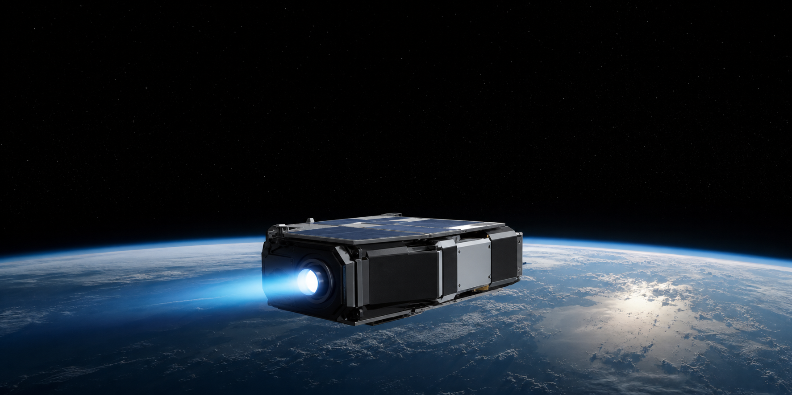
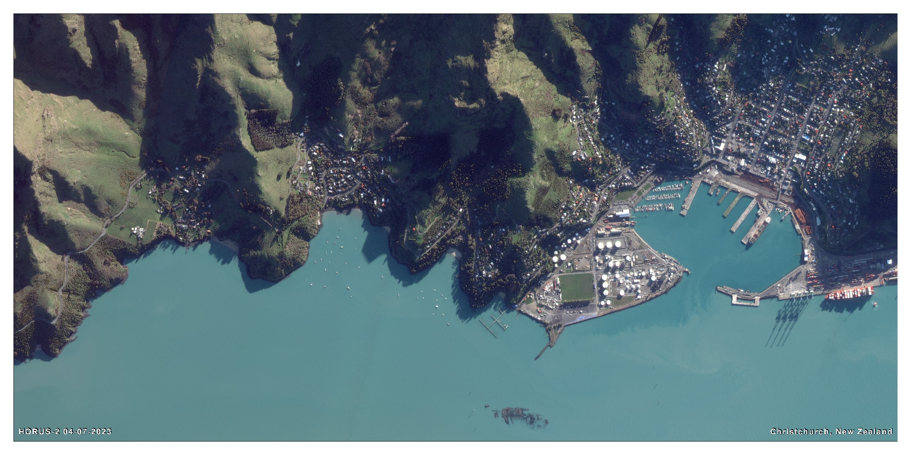
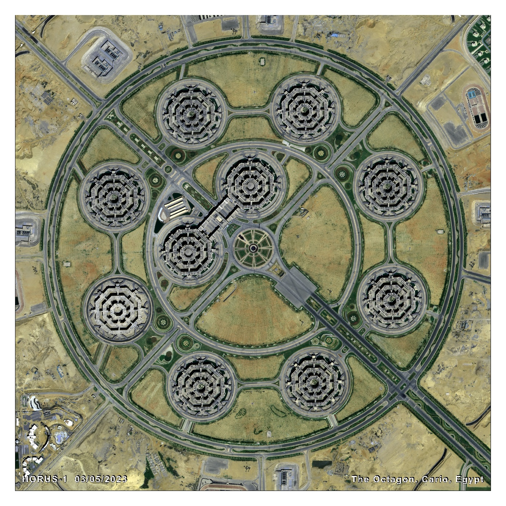
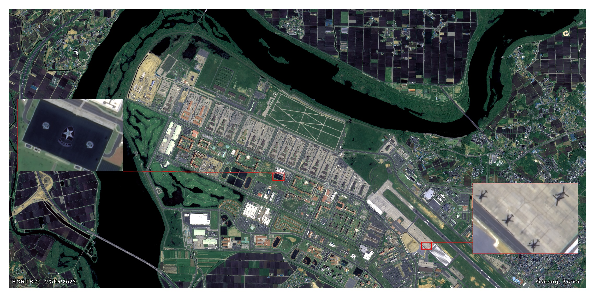
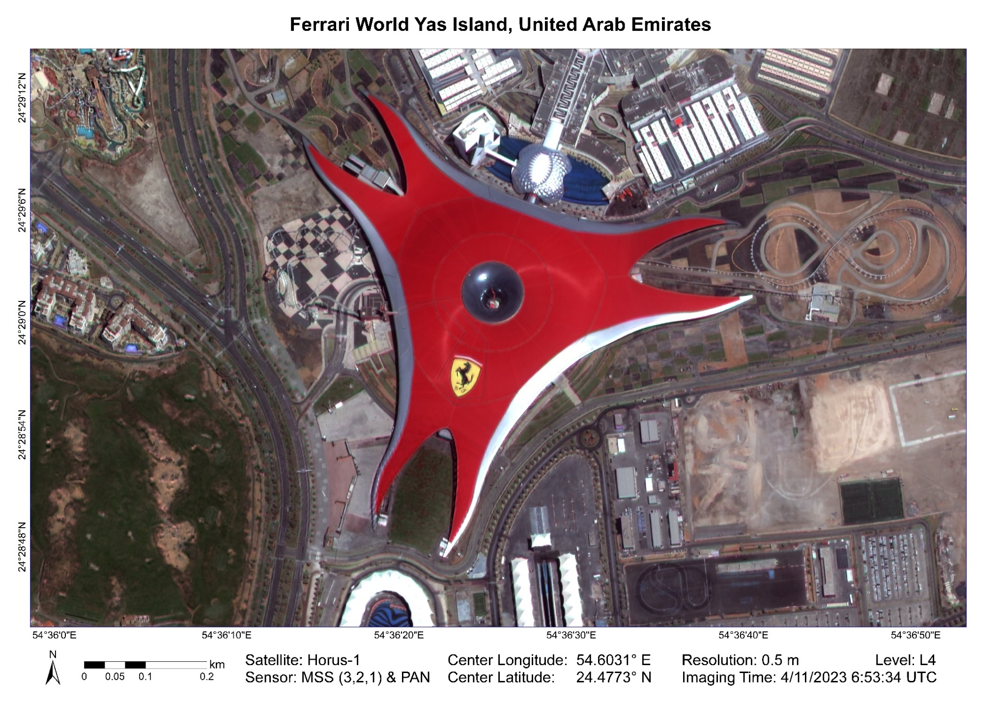
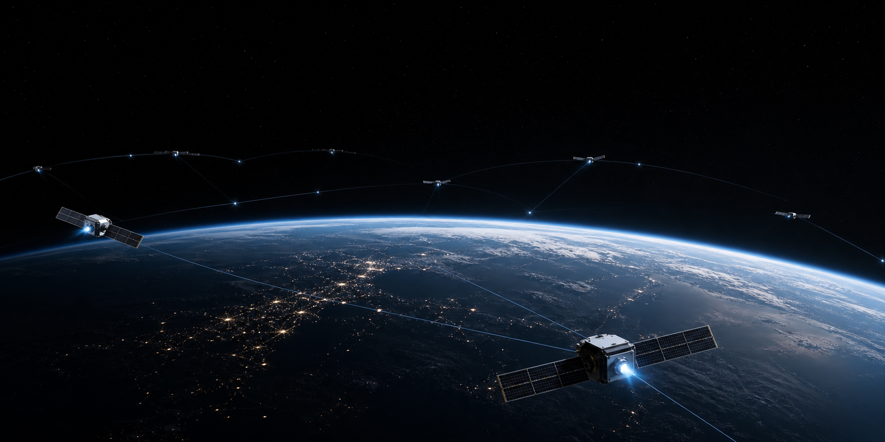
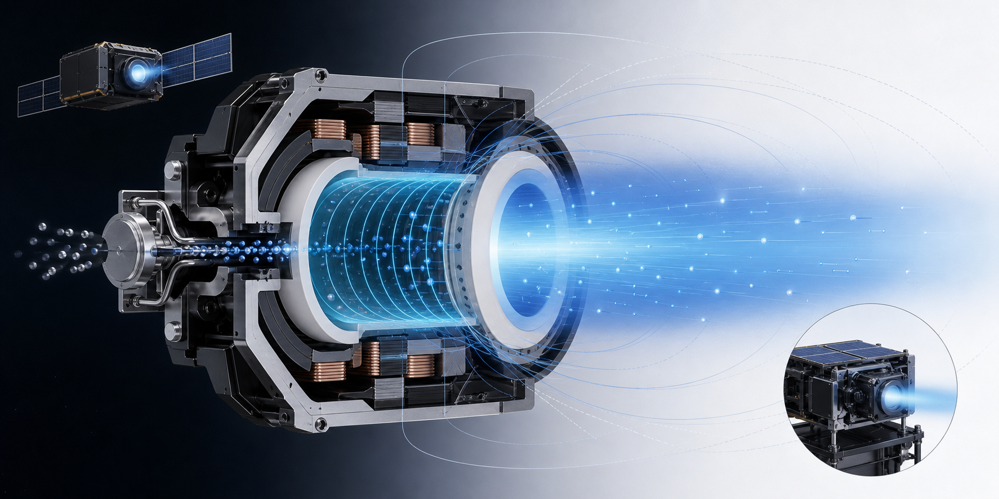
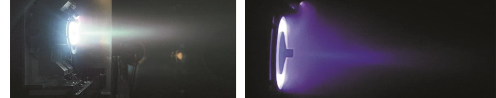
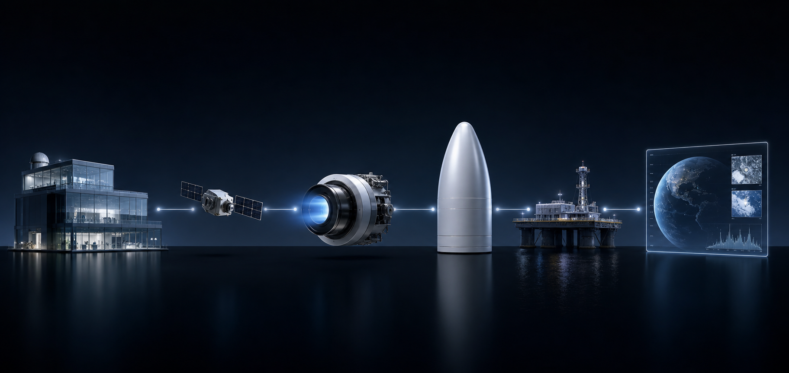
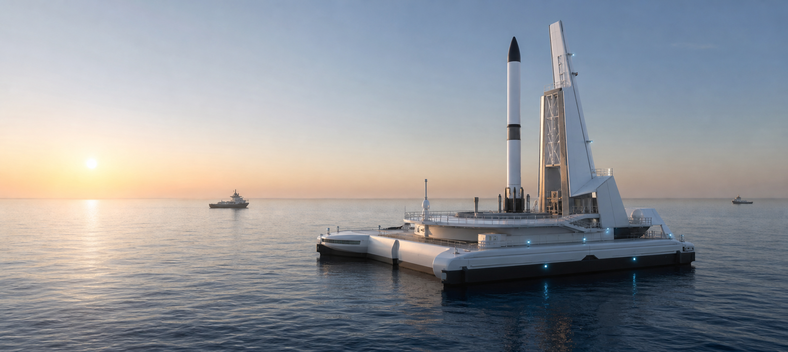

Satellite Data & AI Processing
Purchase satellite data, request AI-assisted annotation, or process large Earth observation datasets at scale.

Space as a Service
Making Space Accessible for Research, Industry, and Innovation.
SpaceS enables organizations to access space without building an aerospace company. From satellite deployment and propulsion integration to launch coordination and mission support, we provide a complete pathway to orbit.
What We Do
SpaceS is designed as the single commercial interface between civil customers and complex aerospace supply chains: satellite access, data services, propulsion, launch, mission engineering, and infrastructure access.
Purchase satellite data, request AI-assisted annotation, or process large Earth observation datasets at scale.
Lease satellite capacity, acquire launched satellite assets, or use existing orbital infrastructure without owning a full program.
Define payload, sensing, communications, propulsion, and mission capabilities based on research or civil-service requirements.
Access launch opportunities through our global partner network, from rideshare missions to dedicated launch campaigns.
Configure electric propulsion engines across mission-specific specifications, then support satellite adaptation, installation, and validation.
Technical consultation, satellite customization, engine adaptation, payload integration, mission planning, supplier coordination, and regulatory support.
Support for specialized launch operations, testing facilities, offshore platform access, and future launch infrastructure projects.
Satellite Intelligence
SpaceS can support customers at different levels of the satellite data value chain: raw image access, processed imagery, AI-assisted annotation, monitoring workflows, and mission-specific data products.





Why SpaceS
Transform scientific ideas into orbital missions.
Deploy technologies faster with reduced complexity.
Access Earth observation, communications, and monitoring capabilities.
Technology & Innovation
SpaceS collaborates with international aerospace partners while building its own engineering depth around Hall effect thruster selection, modification, subsystem adaptation, and satellite-level integration. Our role is not limited to resale: we turn supplier prototypes into mission-ready propulsion solutions for universities, research teams, civil agencies, and commercial spacecraft programs.
Selected technology programs are supported through Proof-of-Concept and innovation initiatives.
Propulsion Core
We focus on configurable Hall thruster systems: engine sizing, propellant management, PPU compatibility, satellite mounting, thermal constraints, command interfaces, and end-to-end integration support.

Reference Performance Envelope
| Parameter | xHET-H20 | xHET-H40 | xHET-H150 |
|---|---|---|---|
| Nominal thrust | 20 mN | 40 mN | 150 mN |
| Power | 300 W | 600 W | 3600 W |
| Specific impulse | >= 1800 s | >= 1800 s | >= 1800 s |
| Thrust direction accuracy | < 1 deg | < 1 deg | < 1 deg |
| Max single operation | > 24 h | > 24 h | > 24 h |
| Start-up time | < 200 s | < 200 s | < 200 s |
| Thruster dry mass | 1.5 kg | 2.3 kg | 8.5 kg |
| Design lifetime | 5000 h | 5000 h | 5000 h |
| Design switch cycles | > 10,000 | > 10,000 | > 10,000 |
| Supply voltage | 300 V | 300 V | 320 V |
Reference values are adapted from supplier material and used here to describe the engineering envelope SpaceS can configure, adapt, and integrate.

Technology We Sell
Select thrust class, power budget, propellant strategy, duty cycle, and mission profile for small satellites and research payloads.
Adapt the propulsion unit to customer satellite structures, electrical interfaces, thermal limits, and command requirements.
Support power processing, flow control, pressure sensing, self-locking valve logic, and propellant feed integration.
Offer a complete service package covering satellite customization, Hall thruster matching, integration, test, launch coordination, and operations support.
SPaaS
Selling thrusters is narrow. Selling satellites is limited. Selling launch is capital intensive. Selling the pathway into space creates a broader platform for research, industry, mapping, weather, agriculture, ocean monitoring, and public-sector missions.

"We believe access to space should be as straightforward as access to cloud computing."
SpaceS is creating a future where universities, startups, researchers, and public agencies can deploy space missions through a unified service platform.
Future Vision

Now Forming
We are establishing supplier representation, prototype procurement, local Hall thruster adaptation, and Singapore-focused Proof-of-Concept pathways for civil space customers.
Start Your Mission